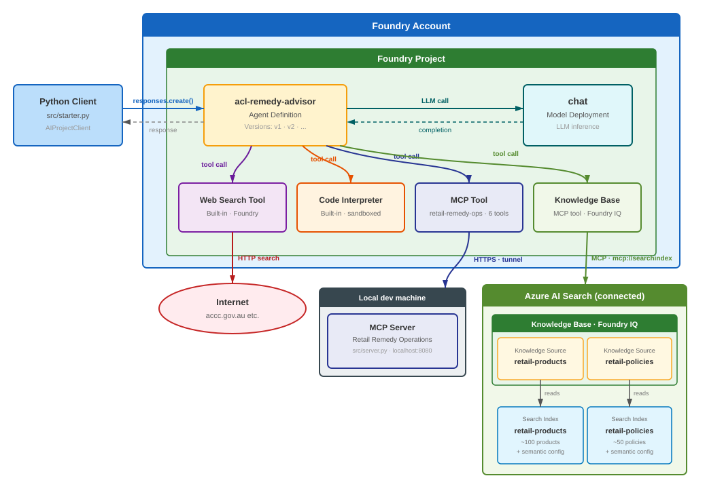
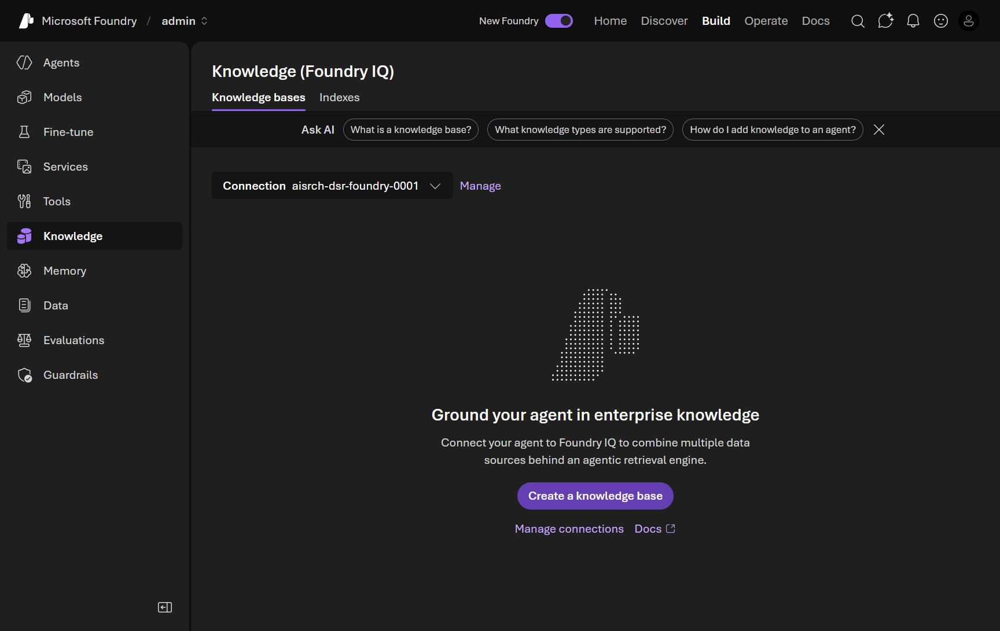
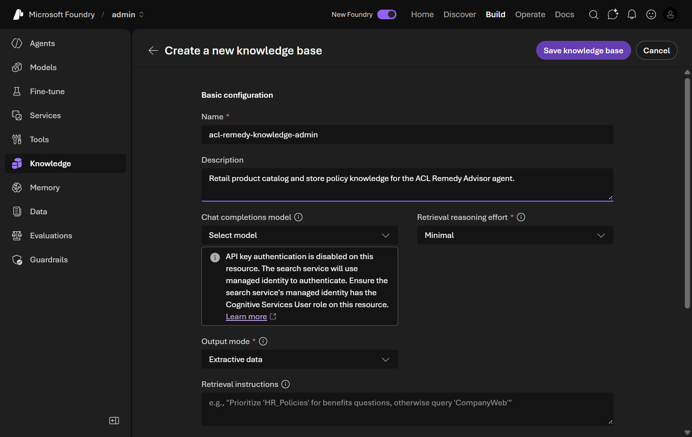
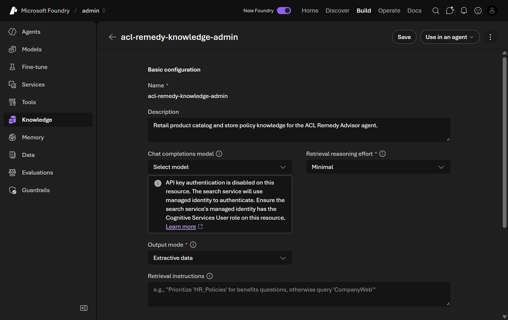
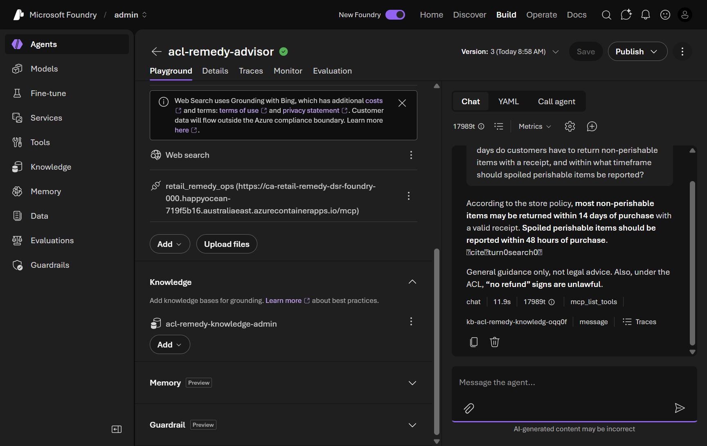
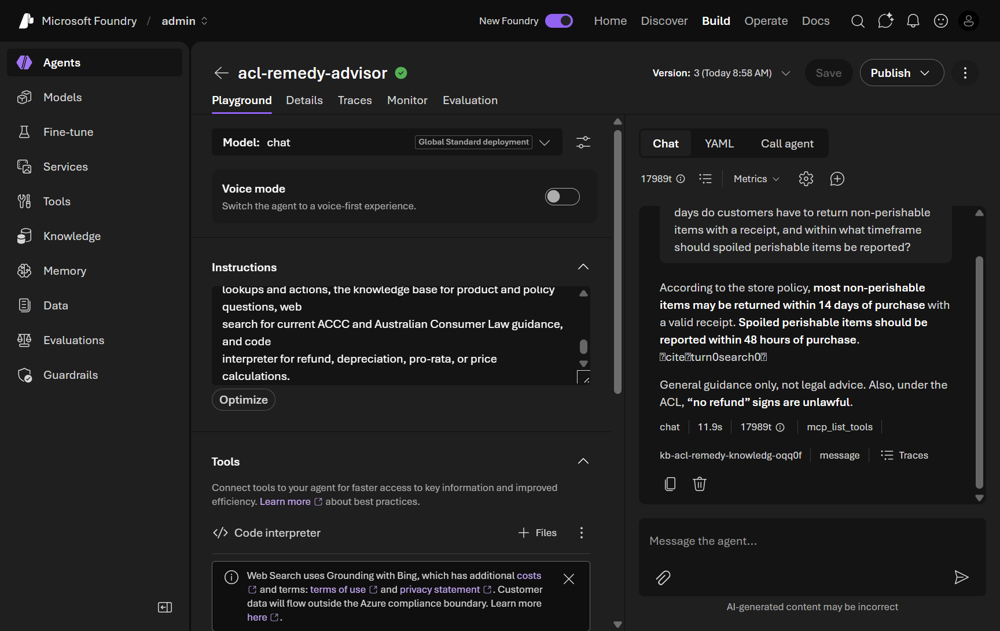

Ground with Foundry IQ knowledge
This module is delivered in the Foundry portal. Where the original steps mention a pre-provisioned shared environment, a .env file, an organizer, or a proctor, use your own Foundry project and the model you deployed in Module 01.
In this module you ground acl-remedy-advisor in your store's own product and policy data so it answers from trusted sources instead of general knowledge. You do it entirely in the Foundry portal, using either of two portal‑native paths:
- Path A — File Search (recommended): upload policy/product documents straight to the agent. No extra Azure resources required.
- Path B — Foundry IQ knowledge base (enterprise): connect one or more Azure AI Search indexes as a reusable knowledge layer.

Tick the checkbox next to each step as you complete it. Your progress is saved in this browser and shown on the workshop overview. You only need to complete one of the two paths below.
Objectives
- Ground the agent in your own documents or search indexes — in the portal.
- Add a routing instruction so the agent prefers grounded knowledge for product and policy questions.
- Confirm answers are grounded and cited, and that existing tools still route correctly.
Concepts
Grounding means giving the model trusted, retrievable content so its answers reflect your current catalog and policies rather than training‑data conventions.
| Portal path | Backing store | Best for |
|---|---|---|
| File Search | Files you upload to the agent | Quick start; a handful of policy/product docs; no extra resources |
| Foundry IQ knowledge base | Azure AI Search index(es) | Large or shared corpora; reusable across agents; enterprise scale |
Foundry IQ knowledge bases are managed on the Knowledge page and are currently a preview portal feature. Creating one typically needs the foundry‑project‑manager role (or higher) and an Azure AI Search service connected to your project, with your content already indexed.
Path A — Ground with File Search (recommended)
1. Prepare a policy document
-
Save the following as a file named
store-return-policy.md(or use your own policy/product documents):# Retail Store — Returns & Remedies Policy ## Non-perishable goods Customers may return non-perishable items within 14 days with a valid receipt for a refund, exchange, or store credit, provided the item is in resalable condition. ## Perishable goods Spoiled or defective perishable items should be reported within 48 hours of purchase for a full refund or replacement. ## Warranty and major failures For a major failure, the customer chooses the remedy: refund, replacement, or repair. "No refund" signs are unlawful under the Australian Consumer Law.
2. Add File Search to the agent
-
In the Foundry portal, open Build → Agents and select acl-remedy-advisor.
-
In the Tools / Knowledge area, click + Add tools and choose File Search.
-
Upload
store-return-policy.md(and any product docs). Wait for Foundry to index the file, then confirm File Search is listed on the agent.Add your own screenshot: the File Search upload dialog on your agent.
3. Add a grounding instruction
-
In the Instructions field, add:
For questions about store policies (returns, refunds, warranties) or specific products (names, prices, availability), retrieve the answer from the uploaded knowledge with File Search and cite it. Prefer this grounded knowledge over your training knowledge for all product and policy questions.
4. Test grounded retrieval
-
Open the Playground and send:
According to our store's return policy, how many days do customers have to return non-perishable items with a receipt, and within what timeframe should spoiled perishable items be reported?
-
Confirm the agent answers 14 days (non‑perishable) and 48 hours (perishable) and cites the uploaded document rather than generic retail conventions.
This question has no receipt or customer ID, so the agent grounds from your uploaded knowledge and does not call the retail-remedy-ops MCP tools — the routing you set up in earlier modules stays intact.
Path B — Ground with a Foundry IQ knowledge base (enterprise)
Prerequisites: an Azure AI Search service connected to your project with your content already indexed (this workshop's scenario uses retail-products and retail-policies indexes), the foundry‑project‑manager role, and access to the preview Knowledge (Foundry IQ) page.
1. Create the knowledge base
-
In the portal, open your project and click Knowledge in the left navigation. Confirm the heading reads Knowledge (Foundry IQ) and the connected Azure AI Search service is pre‑selected.
📸 Screenshot: the Knowledge (Foundry IQ) page

-
Click Create a knowledge base. Set a Name, leave Retrieval reasoning effort at Minimal and Output mode at Extractive data (the defaults — fastest and lowest cost), and leave Retrieval instructions empty.
📸 Screenshot: create knowledge base — basic configuration

-
Under Knowledge sources, click Add sources → Azure AI Search Index, name the source (e.g.
retail-policies), pick the matching index, and click Create. Repeat for any other indexes (e.g.retail-products), then click Save knowledge base.📸 Screenshot: knowledge base created with sources active

2. Attach it to the agent
-
On the knowledge base page, click Use in an agent and select acl-remedy-advisor. On the agent's Playground page, confirm a Knowledge section now lists the knowledge base, separate from the Tools section.
📸 Screenshot: agent with the Knowledge section added

3. Add tool‑routing instructions
-
In the Instructions field, add the following (this reinforces every capability so no tool is left unused):
When a staff member provides a receipt ID, order ID, or customer ID - or asks you to look up a purchase, verify an order, or open a support case - use the retail-remedy-ops tools. Never invent receipt, order, or case details. When answering questions about specific products (names, descriptions, categories, prices, ratings, stock) or store policies (return windows, refund eligibility, warranty coverage, loyalty rules, store-brand guarantees), use the knowledge base to retrieve the answer and cite the source. Prefer knowledge base retrieval over your training knowledge for all product and policy questions. To summarise routing: retail-remedy-ops tools for operational lookups and actions, the knowledge base for product and policy questions, web search for current ACCC and Australian Consumer Law guidance, and code interpreter for refund, depreciation, pro-rata, or price calculations.[!NOTE] An Optimize button may appear below the Instructions panel. Do not use it here — it rewrites instructions with AI and would replace the routing text you just added.
4. Test grounded retrieval
-
Open the Playground and send the same policy query used in Path A. Confirm the agent answers 14 days / 48 hours, includes source citation markers, and shows a
kb-…tool chip in the response metadata.📸 Screenshot: grounded policy response

Validation
- The agent is grounded via File Search (Path A) or a Foundry IQ knowledge base (Path B).
- Policy/product questions return grounded, cited answers that match your source data.
- Operational queries (with a receipt ID) still call
retail-remedy-ops, web search still handles consumer‑law questions, and Code Interpreter still calculates — grounding did not displace the existing tools.
retail-products and retail-policies indexes and the full Foundry IQ walkthrough (output modes, retrieval effort, and routing). Open Module 07 on GitHub →